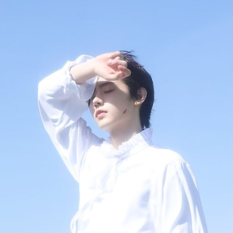

Sunghoon's Profile
Home

Stage Name: Sunghoon
Korean Name: Park Sung Hoon (박성훈)
English Name: Benjamin Park
Age: 21
Birthday: December 8th, 2002
Height: 181 cm (5’11”)
Position: Vocalist, Dancer, Visual
MBTI Type: ISTJ
Representative Emoticon:🐧
Small Facts About Him:
He has a younger sister, Park Yeji (5 years younger)
He has a dog named Gaeul (Autumn in English) and was born on July 8th, 2017
Sunghoon started figure skating at 9 and was a figure skater for 10 years
His favorite color is white.
His favorite season is autumn.